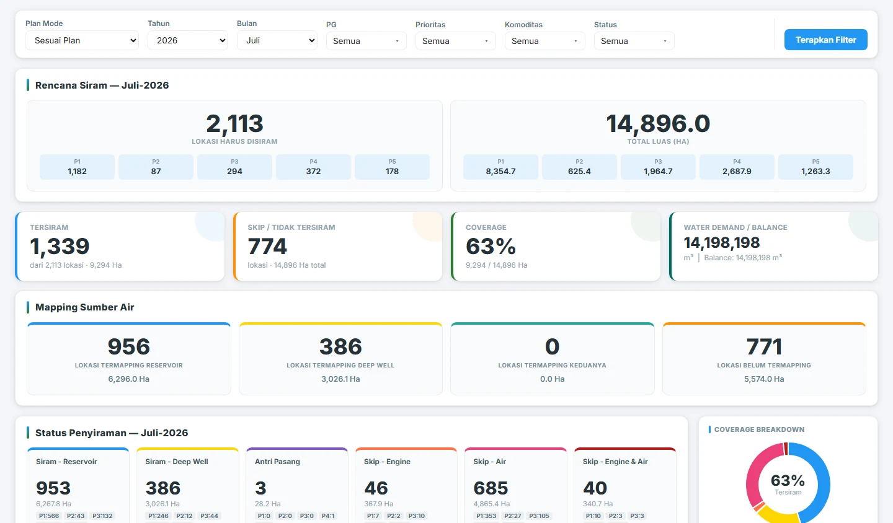
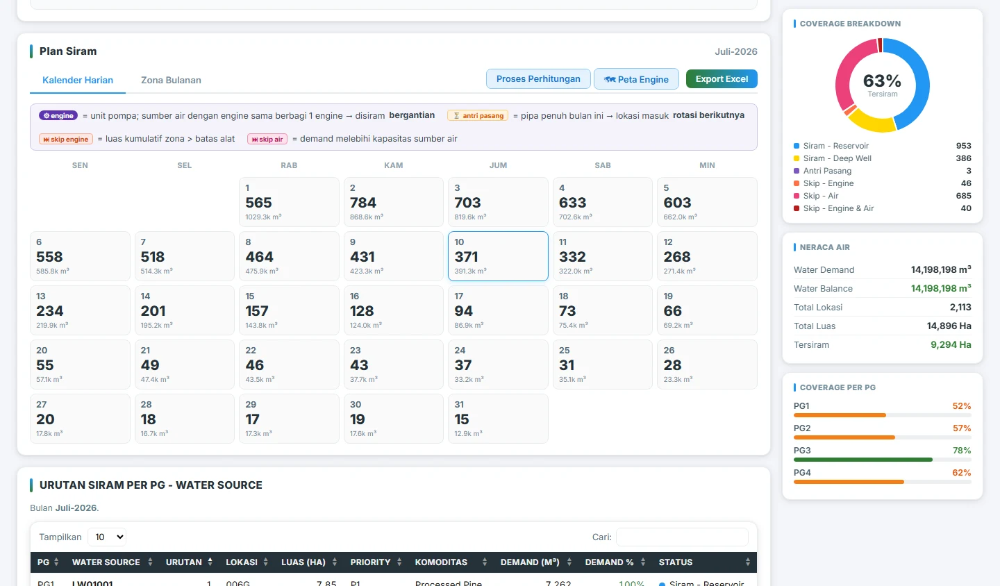
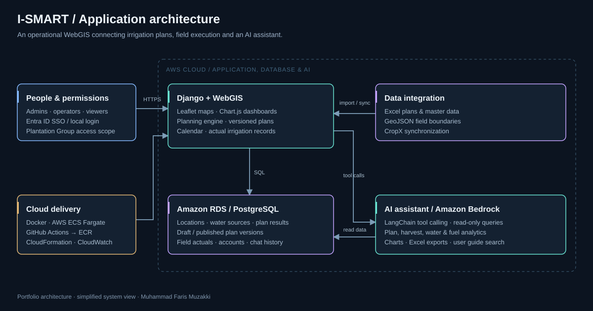

Interactive WebGIS
Leaflet maps show field boundaries, irrigation status, water sources, priorities and commodities. Filters, monthly timelines, source connections and map layers support spatial investigation.
WebGIS · Operational intelligence
Connecting irrigation plans, water availability and field execution in one operational view.

01 / THE CONTEXT
Irrigation planning must balance field priority, available water, pump capacity and the execution calendar. Teams need to see which locations can be served, understand constraints and compare the published plan with actual field activity.
I built I-Smart to bring location maps, water sources, scheduling, operational records and analytics into one application. The platform combines a deterministic planning engine with a conversational AI assistant for querying and explaining operational data.
02 / THE PRODUCT
Leaflet maps show field boundaries, irrigation status, water sources, priorities and commodities. Filters, monthly timelines, source connections and map layers support spatial investigation.
Plan Siram organizes irrigation around water demand, source availability, equipment constraints and priority. Compare planning modes, inspect service coverage and understand skipped locations.
Daily calendars and monthly zones connect planning to execution. Draft and published versions support revisions while preserving a clear planning workflow.
Ask about plans, harvest locations, actual irrigation, water or fuel use. The read-only LangChain / Bedrock assistant queries application data, produces charts, exports Excel and searches the user guide.
Dashboards bring together coverage, priorities, water balance and trends. Actual irrigation and fuel-use analysis help teams inspect execution and equipment consumption.
Excel imports, GeoJSON and CropX synchronization connect source data. Entra ID SSO, local accounts and role-based Plantation Group scope organize access for administrators and operators.
03 / CONVERSATIONAL AI
Example request
“Show this month’s irrigation realization and compare fuel use by engine.”
The assistant selects data tools, reads recorded operational values and creates a chart or Excel export when requested. Its tools are read-only: changes to plans and actual records go through the application’s controlled interface.
04 / INSIDE THE APPLICATION
Captured from the application. These screenshots show the interface at the time of capture.


05 / UNDER THE HOOD
The Django application serves Leaflet maps, dashboards and the planning workflow over PostgreSQL. Imports and synchronization populate the operational data model. The AI assistant accesses that model through read-only tools and returns analysis, charts or exports. The planning calculations are separate from the language model.


Simplified architecture views for this case study; infrastructure identifiers and environment-specific configuration are omitted.
06 / MY CONTRIBUTION
I built I-Smart Water Management as a solo developer: solution architecture, frontend and backend implementation, data integration, AI capabilities, deployment and ongoing application improvements.
The work spans the full application lifecycle, connecting business requirements to a usable interface and the services that run it. Operational data and domain input come from the business context.
07 / WHAT THIS ENABLES
{kind=link}
{kind=link}